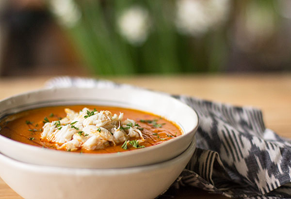

Crab Bisque

A spicy, creamy bisque that combines the flavors of a tomato-carrot bisque with rich lump crab and some spicy seasoning.
Ingredients
- 2 Tbsp. olive oil
- 2 medium carrots, chopped
- ½ medium onion, chopped
- 1 large shallot, chopped
- 5 garlic cloves, minced
- 2 – 14.5 ounce cans Organic Fire-roasted diced tomatoes*
- 2 cups shrimp/seafood stock* + 1 cup water or 2 cups chicken stock + 1 cup water
- ½ cup heavy cream or half & half for a lighter soup
- 8-10 ounces lump crab meat
- Chopped fresh herb e.g., parsley, chives, dill
- Finishing oil*
- ¼ tsp. dill seed
- ½ tsp. Sweet paprika*
- 1 tsp. Chimayo Red Chile Powder* or to taste
- 1 Tbsp. basil purée or pesto*
- 1 tsp. prepared horseradish* or to taste
Steps
- In a soup pot, heat the olive oil over medium low heat. When hot, add the onions, carrots, shallot, and garlic.
- Cook, stirring occasionally until onion and shallots are starting to brown about 5 - 7 minutes.
- Add the dill seed, paprika and chile powder. Sitr into vegetables for 1 minute.
- Add the tomatoes, basil purée and horseradish.
- Use a little water or stock to rinse out the tomato cans. Transfer liquid to the soup pot.
- Add the stock and water.
- Stir and heat over medium until soup comes to a boil. Reduce heat for a simmer. Simmer for 10 minutes. Remove from heat.
- Using an immersion blender, blend the soup into a smooth texture.
- Return to a medium low heat and simmer another 10 minutes. If the soup is not smooth enough, blend again. You may need to add a little more water if the soup if too thick to your liking. I usually end up adding about 1/2 cup more. Just be careful not to get it too thin.
- Stir in the cream.
- If you plan on serving immediately, reheat the soup to a low simmer, simmer for 5 minutes and remove from heat.
- If you plan to serve later or the next day, let the soup cool and refrigerate. When ready to serve, heat soup over medium-low heat to a low simmer and simmer for 5 minutes until heated through.
- To serve, scoop bisque into serving bowls, place about 1/4 cup of lump crab into the middle of the bowl, drizzle with some finishing oil and top with your choice of chopped fresh herb. Serve.
Home